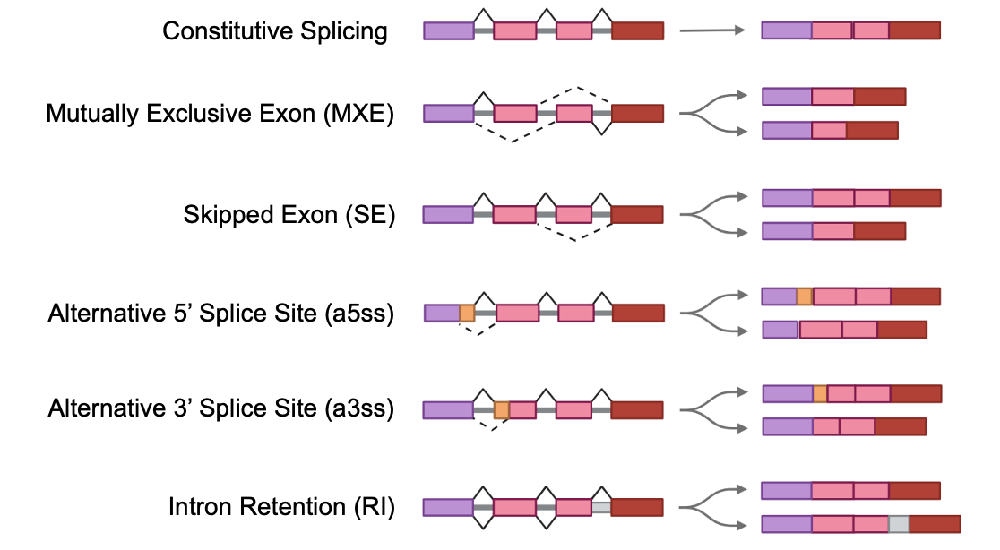
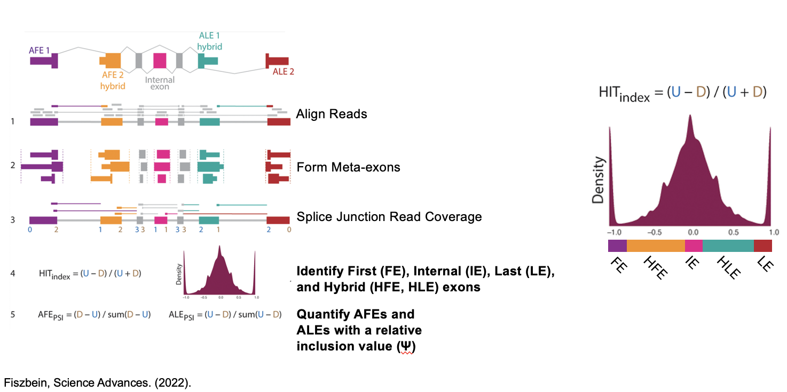

This project aims to create a user interface that allows users to search different types of alternative splicing and view their relationships between phenotypes and genes. Data is derived from The Cancer Atlas Program (TCGA) which represents tissue data from 33 different cancer types.
Alternative splicing is defined as a molecular process that alters pre-mRNAs prior to translation during which a single gene can produce multiple different mRNA transcripts by including/excluding different exons. This process allows for the generation of multiple protein isoforms from a single gene. This process increases the diversity of proteins that can be produced by the genome.
Replicate multivariate analysis of transcript splicing (rMATS) quantifies alternative splicing events. Relative quantification in the form of a Percent Spliced-in Score (Ψ): Ψ∈ [0, 1]. The hybrid-internal-terminal (HIT) Index quantifies and classifies exons.
In the context of disease, particularly cancer, alternative splicing plays a crucial role in tumorigenesis and cancer progression. Aberrant splicing patterns can lead to the production of cancer-specific isoforms that contribute to tumor development, metastasis, and drug resistance. Additionally, alternative splicing can impact the function of key regulatory proteins involved in cell cycle control, apoptosis, and signaling pathways, influencing the malignant phenotype of cancer cells.